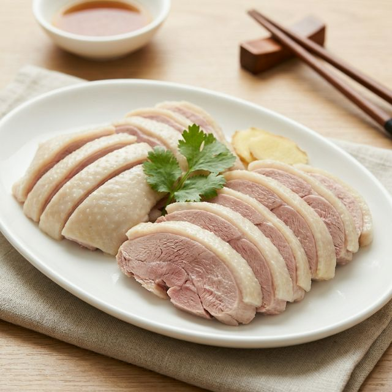

食材准备
- 主料： 樱桃鸭 (或瘦肉鸭) 1只
- 干腌： 炒热的花椒盐 适量
- 湿腌： 老卤 (或盐水) 适量
- 辅料： 葱、姜、八角 适量
- 调味： 绍酒 少许
烹饪步骤
炒盐干腌
锅中炒热食盐和花椒，趁热抹在鸭身内外。在凉处码放腌制2小时。
入卤湿腌
将鸭子放入老卤盆中腌制2-4小时（夏天时间稍短，冬天可长些）。这是盐水鸭肉质鲜嫩的关键。
挂晾
捞出鸭子，沥干水分。挂在通风处晾约1小时，使皮肤收紧。
焖煮
锅中加水，下葱姜八角。水开后放入鸭子。关键在于“火候”：水开后改微火，保持水面似滚非滚状态浸熟（焖煮）约40-50分钟。
切块装盘
取出鸭子自然冷却。凉透后斩切成块。正宗的盐水鸭皮白油润，肉嫩发红，食之有浓郁鸭香味。